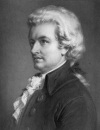

Pek çok müzisyen gibi Avusturyalı Wolfang Amadeus Mozart (1756-1791) da hızlı yaşamış, genç ölmüş ve geride büyük bir müzik arşivi bırakmıştır. Altı yüzden fazla konçerto, senfoni, opera ve sonat yazmıştır. Eserlerinin Batı müziği üzerinde çok büyük bir etkisi olmuştur. Aralarında Beethoven, Hayden ve Chopin gibi isimlerin de bulunduğu sayısız klasik müzik bestekarına ilham kaynağı olmuştur.

Mozart, Salzburg’ta doğmuş ve babası Leopold’dan (1719-1787) keman dersleri almıştır. Henüz altı yaşındayken Avrupa’yı turlamaya ve kraliyet ailelerine konserler vermeye başlamıştı. İlk uzun operasını on dört yaşında yazdı.
Mozart on yedi yaşında Salzburg’ta saray bestekarı oldu. Burası Almanca konuşulan küçük devletlerden biriydi. Hırslı ve yerinde duramayan Mozart birkaç yıl sonra istifa etti ve daha geniş bir dinleyici kitlesine ulaşmak amacıyla 1781 yılında Viyana’ya gitti.
Viyana, sanatsal açıdan daha büyük avantajlara sahipti. Mozart’ın The Marriage of Figaro (Figaro’nun Düğünü / 1786), Don Giovanni (1787) ve The Magic Flute (Sihirli Flüt / 1791) operaları sahnelenince büyük beğeni topladı. Mozart, şehrin önde gelen müzisyenleri arasına girdi. Daha sonra dostu ve ortağı olacak olan bestekar Joseph Hayden (1732–1809) ile tanıştı. İmparator 2. Joseph (1740-1790) sanatla yakından ilgileniyordu. Önce Mozart’ın, daha sonra da genç bir Alman bestekar olan Ludwing van Beethoven’in (1770-1827) hamisi oldu. Mozart, eşi Constanze Weber (1762–1842) ile de Viyana’da tanıştı. 1782 yılında evlendiler ve altı çocukları oldu.
Mozart, kilise ayinleri için besteler yaptı. Joan Sebastian Bach’ın (1685-1750) kontrapuntal füglerine ve İtalyan operasına hayrandı. Müziğinde çok farklı etkilerin varlığı hissedilebiliyordu. 18. yy’ın bütün biçim ve stillerini kendi bünyesinde birleştirmişti. O günlerde henüz yeni bir icat olan piyanodan da yararlandı. Piyano konçertosu yazan ilk bestekarlar arasında yer aldı.
Bilinmeyen bir hastalığa tutulan Mozart, 1791 yılının Aralık ayında öldü. Henüz otuz beş yaşındaydı. Son eseri olan cenaze marşını tamamlayamadı.
Ek Bilgiler
1- Milos Forman (1932–) tarafından yönetilen ve Tom Hulce’un (1953–) ünlü bestekarı oynadığı 1984 yapımı “Amadeus,” aralarında en iyi film ve en iyi erkek oyuncu da olmak üzere tam sekiz dalda Oscar ödülü kazanmıştır. Kimi tarihçiler filmi Mozart’ın biyografisine uymadığı ve bir başka bestekar olan Viyanalı Antonio Salieri (1750–1825) ile olan rekabetini abarttığı için eleştirmiştir.
2- Mozart’ın babası keman öğretme tekniğinde büyük bir yenilikçiydi. Her yıl Almanya’nın Augsburg şehrinde onun onuruna bir keman yarışması düzenlenmektedir.
3- Rock yıldızı Eddie Van Halen (1955–) oğluna ünlü bestekarın anısına “Wolfang” adını vermiştir.